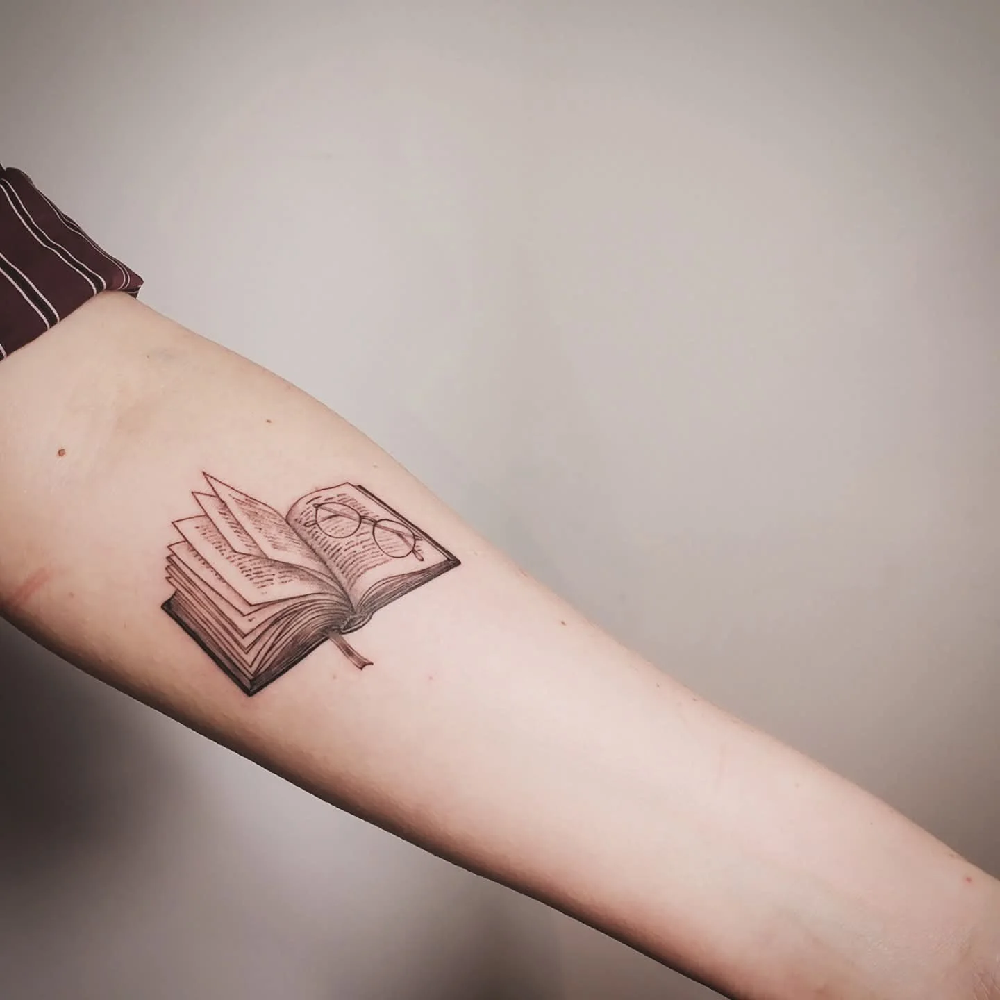
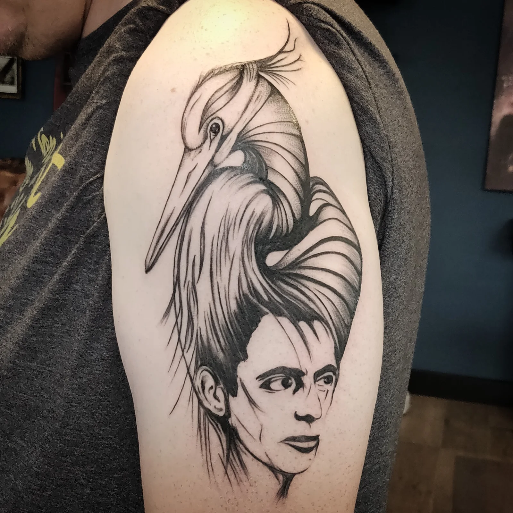
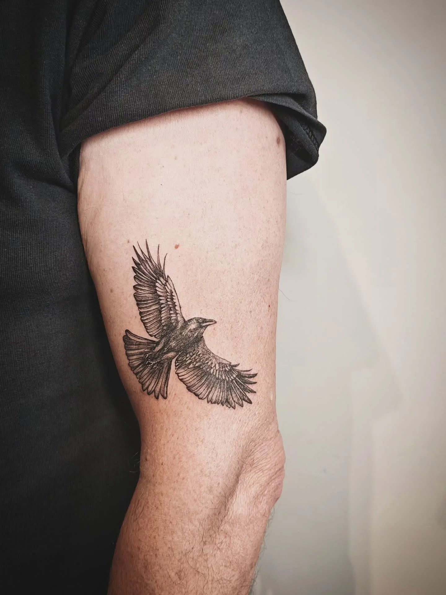
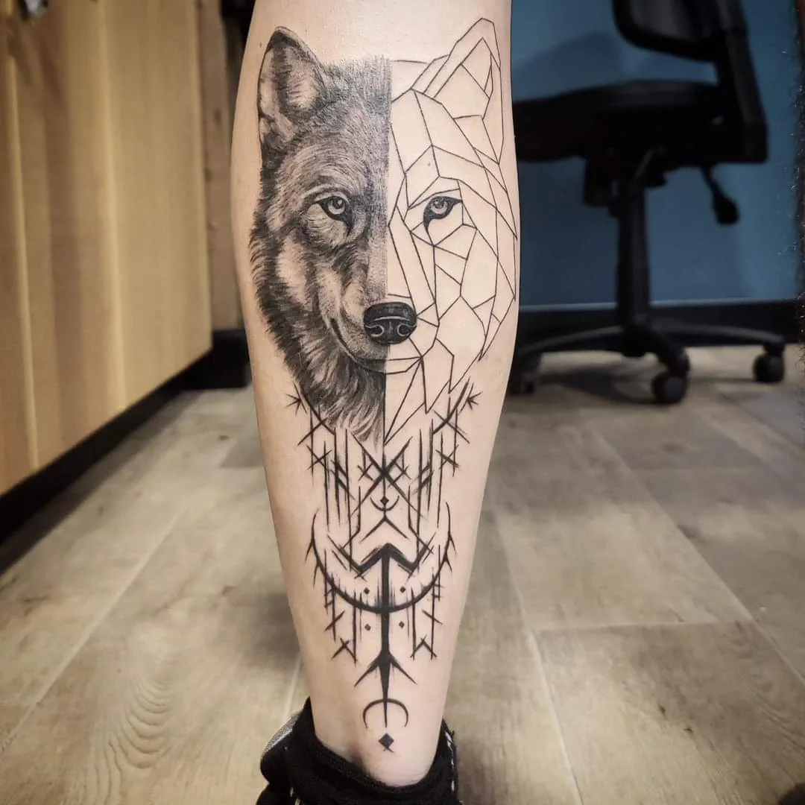
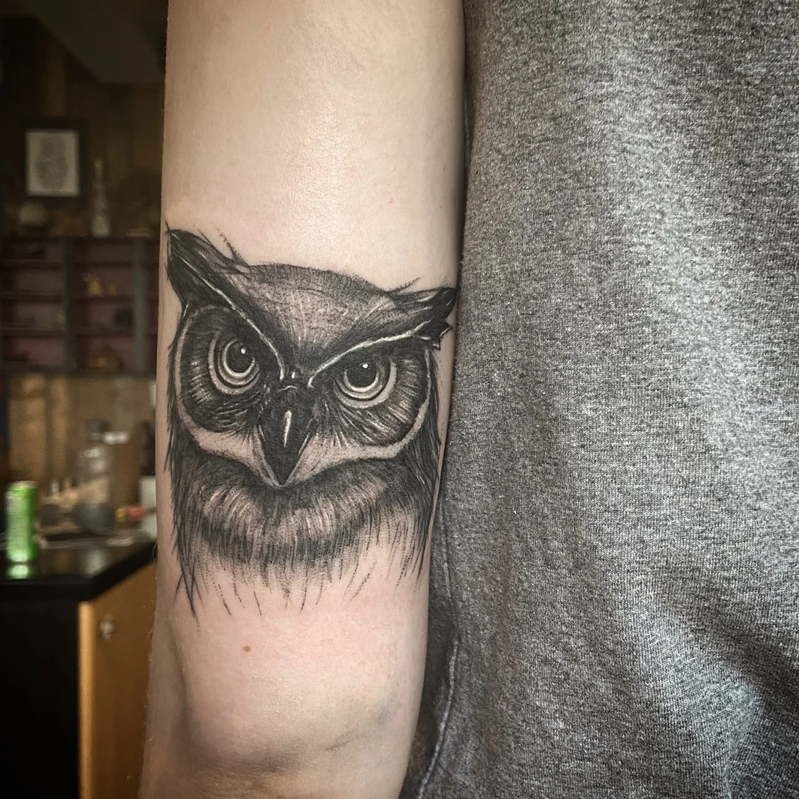
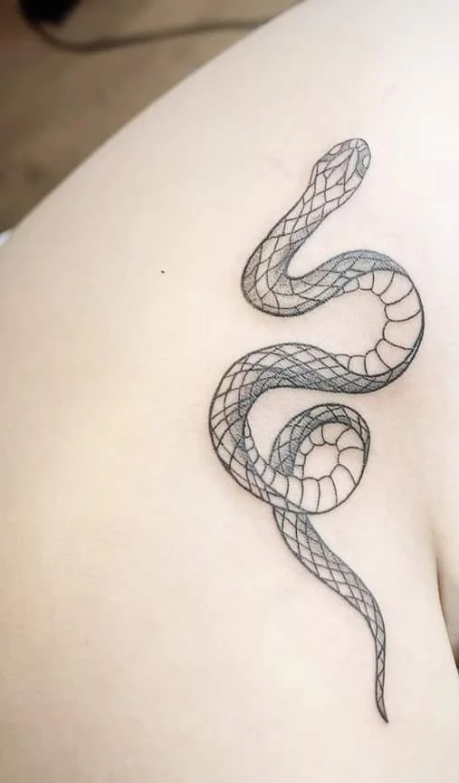
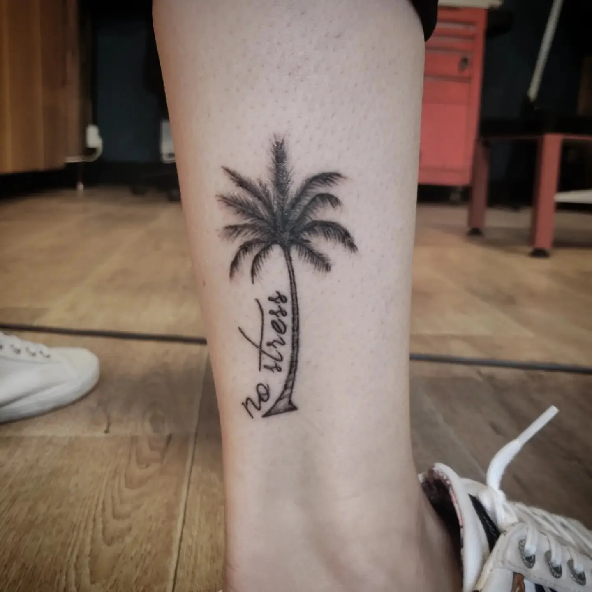
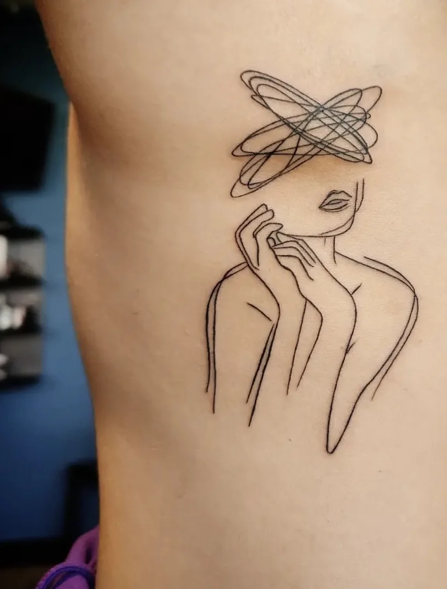
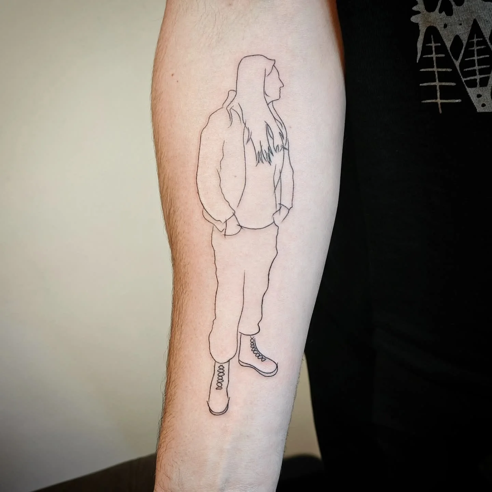

Samen getekend, rustig gezet.
Je vertelt me wat je tattoo moet betekenen. We tekenen tot hij klopt, en in de studio nemen we er alle tijd voor.
5,0★★★★★66 reviews op GoogleFijne lijn, zachte schaduw.
Van een silhouet in één dunne lijn tot een uil in zwart-grijs. Elk ontwerp is getekend voor de persoon die het draagt.







Iets in je hoofd, maar nog niet op papier?
Stuur een foto, een krabbel of gewoon een paar woorden. Daar beginnen we mee.
Stuur het naar Philine →
Van schets naar huidGeen haast, wel een plan.
Voor veel mensen is het hun eerste tattoo. Daarom loop ik elke stap rustig met je door.
- 01
Je verhaal
Stuur je idee, een foto of een schets. Vertel er gerust bij waarom hij er moet komen.
- 02
Samen tekenen
Ik maak een ontwerp en we schaven eraan tot jij het helemaal ziet zitten.
- 03
De juiste plek
Twijfel je over de plaats of de grootte? Dan zoeken we het samen uit, op je eigen huid.
- 04
Zetten en verzorgen
Ik neem de tijd om hem goed te zetten, en je gaat naar huis met duidelijke uitleg over de nazorg.
Vaak hun eerste, zelden hun laatste.
Vanaf het eerste contact voelde ik me gehoord en nam ze echt de tijd om naar mijn verhaal en wensen te luisteren.
Ik voelde mij meteen op mijn gemak. Het was voor mij mijn eerste tattoo.
Alles wat ik wou dat in de tattoo zat, zit er in verwerkt. Echt een kunstwerk!
Stuur je idee.
Een bericht op WhatsApp is genoeg om te beginnen. Ik antwoord zelf en we spreken samen af wanneer je langskomt.
- Een foto, schets of een paar woorden over wat je wil
- Waar op je lichaam je hem ziet
- Ongeveer hoe groot
De studio
- Dinsdag tot vrijdag10u tot 18u
- Zaterdag10u tot 17u
- Zondag en maandaggesloten